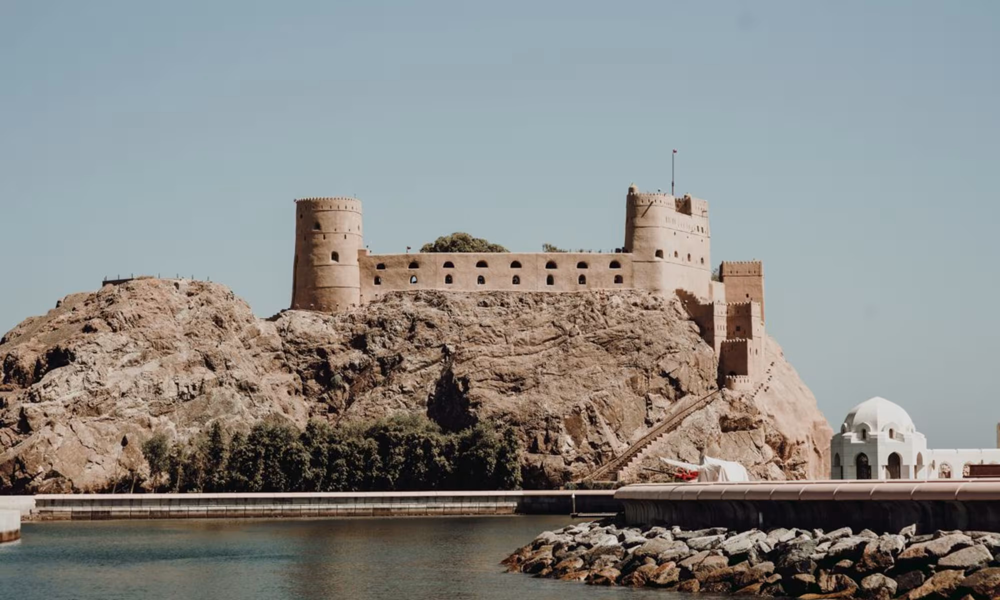
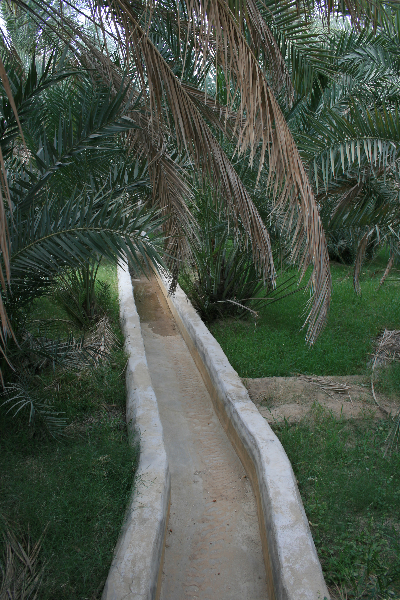
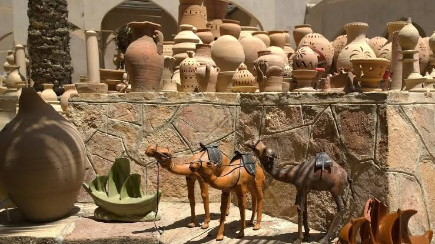
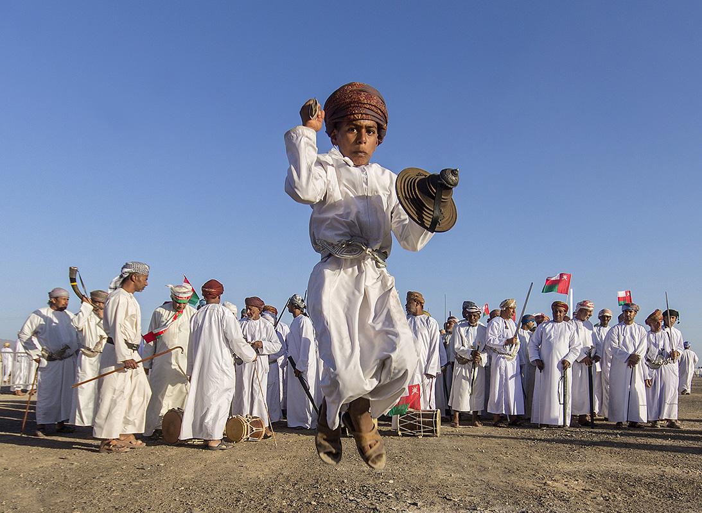
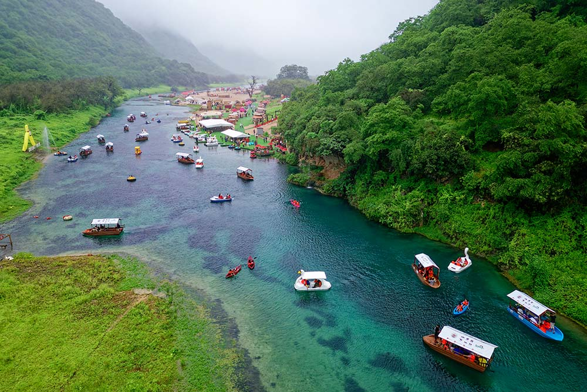
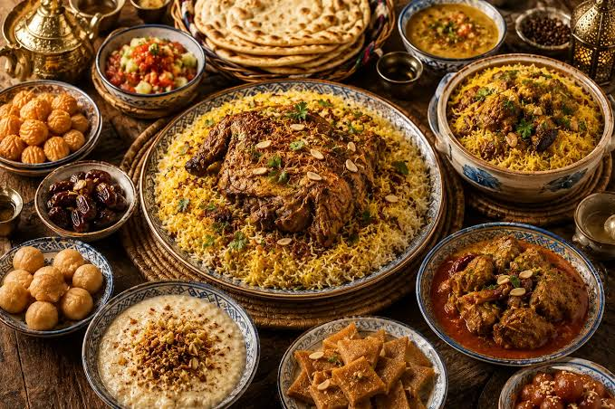
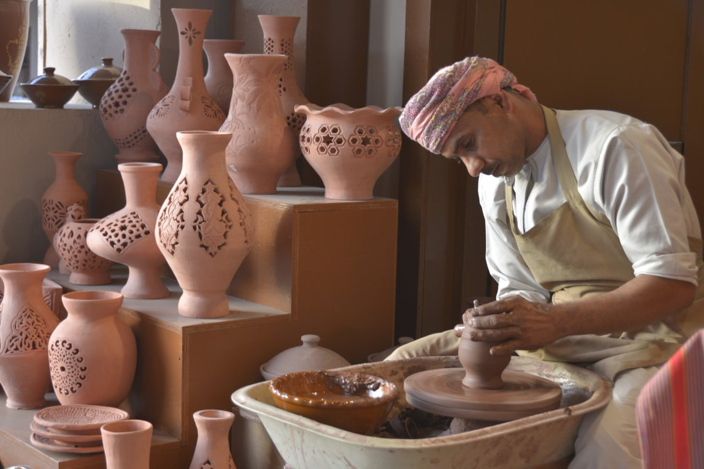

Welcome to Omani Heritage
Oman is a country rich in history, culture, and traditions. Its heritage reflects the identity of its people and tells stories of generations who contributed to building its civilization. Explore the beauty of Omani heritage and discover the traditions that make Oman unique.

Explore Omani Heritage
Omani heritage includes different cultural elements that represent the country's history and identity. From traditional clothing and handicrafts to folk music, delicious food, and beautiful landscapes.
The Importance of Preserving Omani Heritage
Preserving Omani heritage is important because it connects the present generation with its past. Traditional crafts, customs, music, and historical places represent the knowledge and experiences of our ancestors.
|
 |
Discover Traditional Omani CraftsOmani traditional crafts include pottery, silverwork, palm-leaf weaving, and textile making. These crafts represent skills passed down through generations. |
Types of Omani Heritage
|
 Tangible HeritageTraditional clothing, jewelry, pottery, and historical objects. |
 Intangible HeritageTraditional music, folk dances, customs, and stories. |
 Natural HeritageMountains, caves, wadis, and traditional aflaj systems. |
 Culinary HeritageOmani Shuwa, Omani Halwa, Majboos, and traditional coffee. |
 Craft HeritagePottery making, silverwork, weaving, and palm-leaf crafts. |
Organizations Interested in Omani Heritage
Governmental
- Ministry of Heritage and Tourism
- National Museum of Oman
- Ministry of Culture, Sports and Youth
- Ministry of Education
- National Records and Archives Authority
- Oman Across Ages Museum
Private
- Bait Al Zubair Foundation
- Omani Traditional Crafts Institutions
Civil Society (Non-governmental)
- Oman Historical Association
- Environment Society of Oman
- Oman Cultural Club
- Oman Traditional Music Centre
- Al-Awtabi Centre for Cultural and Heritage Studies